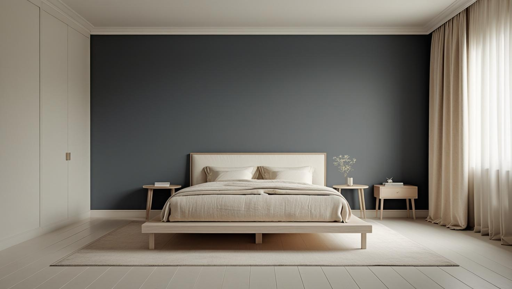
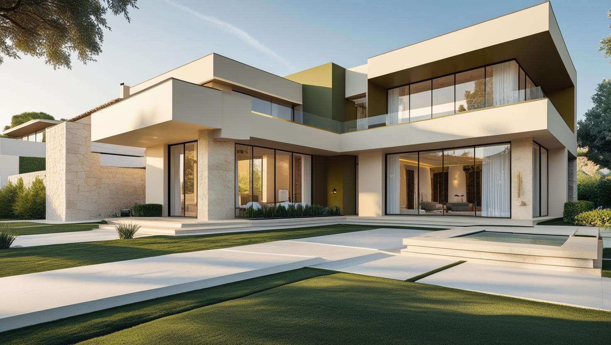
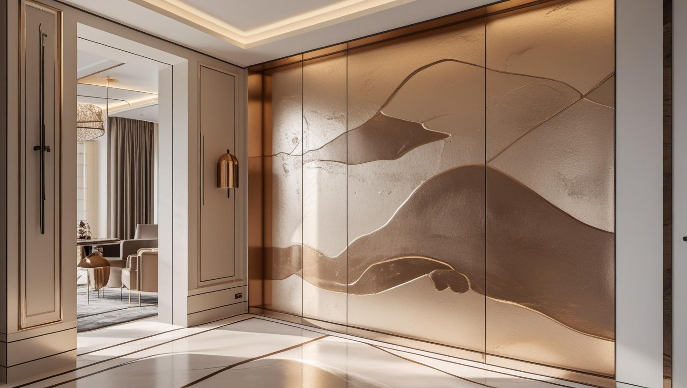

İstanbul Arnavutköy Profesyonel Boya Ustası
20 yıllık tecrübemizle Hadımköy'deki iş yerlerinden Taşoluk ve Bolluca'daki sitelere, Karadeniz kıyısındaki evlere kadar iç ve dış cephe boyası yapıyoruz. Ücretsiz keşfin ardından yazılı teklif veriyoruz.
Arnavutköy'de Boya Badana: Müstakil Ev ve Yeni Yerleşim Karışımı
Arnavutköy boyacı ve Arnavutköy boyacı ustası talebi ilçenin karma yapısından geliyor: yerleşik mahallelerde müstakil ve az katlı konut, yeni gelişen bölgelerde apartman ve site stoğu.
Müstakil ve az katlı yapıda iş çoğu zaman dış cepheyi ve bahçe duvarını da kapsıyor; bu yüzeyler iç cepheden farklı hazırlık ve farklı boya sistemi istiyor. Apartman tarafında ise iş daire içi yüzey hazırlığı ve kat uygulamasına odaklanıyor.
İlçenin genişliği nedeniyle ulaşım süresi iş planında görünür bir kalem; keşifte adresi görüp bunu baştan hesaba katıyoruz.
Hizmetlerimiz

İç Mekan Boyama
Arnavutköy'de iç mekân boyası yapının yaşına göre farklı ilerler. Yeni sitelerdeki evlerde hazırlık çoğunlukla ince çatlak dolgusu ve astarla sınırlı kalırken, eski müstakil evlerde kabaran katmanlar, tavan köşeleri ve nem izleri boyadan önce onarılır.
- Site dairesi duvar ve tavan boyası
- Müstakil ev oda boyama
- Alçı ve sıva tamiri
- Kapı ve kartonpiyer boyama

Dış Cephe Boyama
Bahçeli ve müstakil evlerin cepheleri güneşe, yağışa ve rüzgâra korumasız kalır; Karaburun gibi kıyı mahallelerinde buna nemli deniz havası da eklenir. Dış cephe boyasından önce çatlaklar, tutunmayan eski boya ve saçak altı gibi su toplayan noktalar kontrol edilir.
- Müstakil ev dış cephe boyama
- Bahçe duvarı ve korkuluk boyası
- Çatlak ve sıva onarımı
- Kıyı nemine dayanıklı boya sistemi

Dekoratif Boyama
Hadımköy çevresindeki iş yerlerinde karşılama alanı ve yönetim ofisi duvarları, evlerde ise salon ya da merdiven duvarı dekoratif boyaya uygun yüzeylerdir. Renk ve doku, alanın aldığı ışık ile mobilya tonlarına bakılarak seçilir.
- Karşılama alanı vurgu duvarı
- Taş ve tuğla efektli yüzeyler
- Salon ve merdiven duvarı
- Mobilya tonuna göre renk seçimi
Fiyat Tablosu
| Hizmet Türü | Metrekare Fiyatı | Ortalama Süre (100m²) | Garanti |
|---|---|---|---|
| İç Cephe Boyama | 100-200 TL | 2-3 Gün | Uygulama kapsamına göre |
| Dış Cephe Boyama | 180-280 TL | 3-5 Gün | Uygulama kapsamına göre |
| Dekoratif Boyama | 250-500 TL | 4-7 Gün | Uygulama kapsamına göre |
| Ofis Boyama | 150-250 TL | 2-4 Gün | Uygulama kapsamına göre |
Metrekare fiyatları yaklaşık ön değerlendirme aralığıdır. Uygulanacak ölçüm yöntemi, boyanacak alanın kapsamı, yüzey durumu, tamirat ihtiyacı, kat sayısı ve malzeme seçimi keşif sırasında netleştirilir.
Dış cephe boya fiyatları uygulama alanı için yaklaşık 180–280 TL/m² aralığındadır. Kesin hesaplama yöntemi ve teklif; yüzey durumu, bina yüksekliği, erişim veya iskele ihtiyacı, tamirat kapsamı, boya sistemi ve uygulanacak kat sayısına göre keşif sırasında netleştirilir.
Uygulama kapsamına göre işçilik garantisi sağlanır. Garanti kapsamı ve istisnaları teklif veya iş sözleşmesinde belirtilir.
Bu rakamlar İstanbul Boyacılık'ın 2026 gösterge fiyat aralığıdır. Bir piyasa ortalaması değildir. Kesin fiyat; yüzey durumu, hazırlık ve tamirat miktarı, uygulanacak kat sayısı, seçilen malzeme sınıfı, ulaşım ve kat koşulları ile evin eşyalı mı boş mu olduğu keşifte görüldükten sonra belirlenir.
Arnavutköy'de aralığı belirleyen ana etken işin iç cephe ile mi sınırlı olduğu yoksa dış cepheyi de mi kapsadığı. Dış cephede yükseklik ve erişim ihtiyacı, iç cepheye göre aralığı belirgin biçimde yukarı taşıyor.
Hadımköy Çevresinde Depo, Atölye ve Ofis Boyası
Hadımköy ve Yassıören çevresindeki sanayi ve lojistik alanlarında boya işi konuttan farklı planlanır: yüzeyler tozlu ve yağlı olabilir, alanlar geniş, tavanlar yüksektir ve iş, çalışma düzenini en az etkileyecek sırayla ilerlemelidir.
- Toz ve yağ temizliği: Duvarda biriken toz ve yağ tabakası alınmadan boya iyi tutunmaz; yüzey önce yıkanır ya da zımparalanır.
- Darbe alan duvar dipleri: Transpalet ve araç geçen koridorlarda duvarın alt bölümü daha dayanıklı, silinebilir bir boyayla ayrıca ele alınabilir.
- Yüksek tavan: Depo ve atölyelerde hangi erişim ekipmanının gerektiği keşifte belirlenir ve teklifte ayrı kalem olarak gösterilir.
- Vardiya ve sevkiyat düzeni: Boyanacak bölümlerin sırası, yükleme alanlarının kullanımına ve çalışma saatlerine göre sizinle birlikte belirlenir.
İş yeri boyasında maliyet kalemlerini önceden görmek isterseniz dükkân ve iş yeri boyama fiyatları rehberimize göz atabilirsiniz.
Taşoluk ve Bolluca'daki Sitelerde Boya ve Yönetim Kuralları
Arnavutköy'de Taşoluk ve Bolluca gibi gelişmekte olan mahallelerde apartmanlardan müstakil evli sitelere kadar farklı konut tipleri bulunur; hangisinde oturuyor olursanız olun, boyaya başlamadan önce site yönetiminin kurallarını öğrenmek gerekir.
Ev içindeki renk seçimi size aittir. Dış cephe, bahçe duvarı ve balkon gibi dışarıdan görünen yüzeylerde ise renk ve malzeme genellikle yönetim planına bağlıdır. Keşiften önce yönetimden şu bilgileri almanız işi hızlandırır:
- Hafta içi ve hafta sonu çalışma saatleri
- Güvenlik girişinde usta ve araç kaydı
- Malzeme aracının yanaşabileceği yer ve otopark
- Dış yüzeyler için onaylı renk kodları
Ortak peyzaj alanları, yürüyüş yolları ve komşu bahçe duvarları çalışma boyunca örtülerek korunur; fırça ve kova yıkama için site kurallarının izin verdiği alan kullanılır.
Karaburun ve Durusu Gibi Kıyı Mahallelerinde Dış Cephe Boyası
Arnavutköy'ün kuzeyi Karadeniz kıyısına ve Terkos Gölü'ne uzanır; Karaburun ve Durusu gibi mahallelerdeki evlerde dış cephe boyası nem, rüzgâr ve tuzlu havaya dayanacak biçimde seçilmelidir.
Deniz havası alan cephelerde sık görülen bozulmalar kabarma, tebeşirlenme ve renk solmasıdır. Uygulamadan önce tutunmayan katman kazınır, yüzey yıkanıp kurutulur ve sıva çatlakları onarılır; ardından dış cephe astarı ile su iticiliği yüksek, nefes alabilen bir son kat uygulanır.
Rüzgârlı, yağışlı veya sisli günlerde dış cephe boyanmaz. Bu yüzden kıyıdaki işlerde takvim hava durumuna göre esnek tutulur ve uygulama, yüzeyin tamamen kuruduğu günlere planlanır.
Eski Müstakil Evlerde Boyadan Önce Yapılması Gereken Onarımlar
İlçenin köy kökenli yerleşimlerindeki eski müstakil evlerde yeni boyanın ömrünü, alttaki sıvanın ve eski boya katmanlarının durumu belirler.
- Sıva boşlukları: Tıklatıldığında boş ses veren sıva kırılıp yenilenmeden boyanırsa kısa sürede çatlar.
- Zemine yakın duvarlar: Alt kat duvar diplerindeki kabarma çoğu zaman zeminden çekilen nemden kaynaklanır; nem giderilmeden yapılan boya aynı yerden yeniden bozulur.
- Üst üste binmiş katmanlar: Farklı dönemlerde sürülmüş boyalar birbirini tutmayabilir; tutunmayan katmanlar kazınarak alınır.
- Tavan ve köşe çatlakları: Duvar ile tavanın birleştiği yerlerdeki çatlaklar file ve alçıyla güçlendirilir.
Bu onarımlar keşifte ayrı kalemler olarak not edilir ve yazılı teklifte boyadan önce yapılacak hazırlık olarak görünür. Boyanın hangi nedenlerle kabarıp döküldüğünü ayrıntılı görmek için boya neden dökülür ve soyulur rehberini okuyabilirsiniz.
Google Haritalar'daki Müşteri Yorumlarımız
Yorumlar, İstanbul Boyacılık'ın Google Haritalar işletme profilinden olduğu gibi alınmıştır. Arnavutköy dahil İstanbul genelindeki işlerimize ait yorumların tamamını Google Haritalar profilimizde okuyabilirsiniz.
"Enes beye çok tşk ettim yönlendirigi ustalar gayet güzel işçilik yaptılar poşet olsun süpürgelik üstüne band olsun hepsini yaptılar ve işin sonu mükemmel hiç kirletme olmadı gönül rahatlığıyla tavsiye ediyorum tekrardan çok teşekkürler ediyorum gayet memnun kaldım"
Mehmet Çevik
Google Haritalar yorumu
"Baran ustadan çok memnun kaldık, ellerine emeğine sağlık hakkını helal etsin. Temizliğe özene çok dikkat eden ince işçilik çalışan birisi. Mutlaka çevreme de önereceğim kendisini. 🙏"
Yaren Sert
Google Haritalar yorumu · İç cephe boyama
"Firma ile Mayıs 2026 başında çalışma imkanım oldu gelen Baran Usta işinin gayet ehli hızlı ve tertemiz işini bitirdi fiyatları gayet uygun çalışma performansı gayet yüksek daireyi pırıl tertemiz yapıp çıktılar Baran Usta ve yanındaki arkadaşlara teşekkür ederim"
Tamer Özkenel
Google Haritalar yorumu
Faydalı Bağlantılar
Arnavutköy boya badana planında fiyat hesabı, boya markası ve yakın ilçe seçeneklerini birlikte değerlendirmek için aşağıdaki rehberler kullanılabilir.
Arnavutköy Boyacı ve Boya Badana: Sık Sorulan Sorular
Arnavutköy boya badana teklifinde hangi kalemler ayrı yazılıyor?
İç duvar ve tavan metrajı, alçı ve sıva tamiri, dış cephe ile bahçe duvarı yüzeyleri ve yüksek alanlarda gereken erişim ekipmanı teklifte ayrı kalemler olarak yazılır. Metrekare aralıklarını bu sayfadaki fiyat tablosunda görebilirsiniz; kesin tutar keşiften sonra yazılı teklifte netleşir.
Arnavutköy boyacı ustası fotoğrafla fiyat verebilir mi?
WhatsApp'tan gönderdiğiniz fotoğraflar işin kapsamını anlamamıza ve keşfi hazırlamamıza yardımcı olur. Ancak nem, sıva boşluğu ve çatlak derinliği yerinde görülmeden anlaşılmadığı için net fiyatı ücretsiz keşiften sonra yazılı olarak veriyoruz.
Müstakil evimin dış cephesini de boyuyor musunuz?
Boyuyoruz. Dış cephede yüzey hazırlığı, gerekiyorsa çatlak onarımı ve dış mekâna uygun boya sistemi kullanılıyor. Yükseklik ve erişim ihtiyacı varsa bunu keşifte ölçüp teklife ayrı yazıyoruz.
Bahçe duvarı için farklı boya mı gerekiyor?
Gerekiyor. Bahçe duvarı doğrudan yağmur ve güneş görüyor, ayrıca zeminden nem çekebiliyor. İç cephe boyası bu koşullarda kısa sürede bozuluyor; dış mekâna uygun bir sistem ve doğru astar kullanmak gerekiyor.
Kaç günde bitiyor?
Metrekare, yüzeyin durumu, iç mi dış mı olduğu ve evin eşyalı olup olmadığı belirliyor. Dış cephe işleri hava koşullarına da bağlı. Net gün sayısını keşiften sonra veriyoruz.
İletişim
İşletme merkezi: Orta, Demirkapı Cd. No:1, 34030 Bayrampaşa/İstanbul
İşletme merkezini Google Haritalar’da görüntüleyin
İletişim Bilgileri
Telefon: 0507 832 29 12
E-posta: boyaustamistanbul@gmail.com
10+ Uzman Ustamızla Arnavutköy ve çevresine hizmet veriyoruz.
Çalışma Saatleri: 7/24 (Pzt-Paz 00:00-23:59)